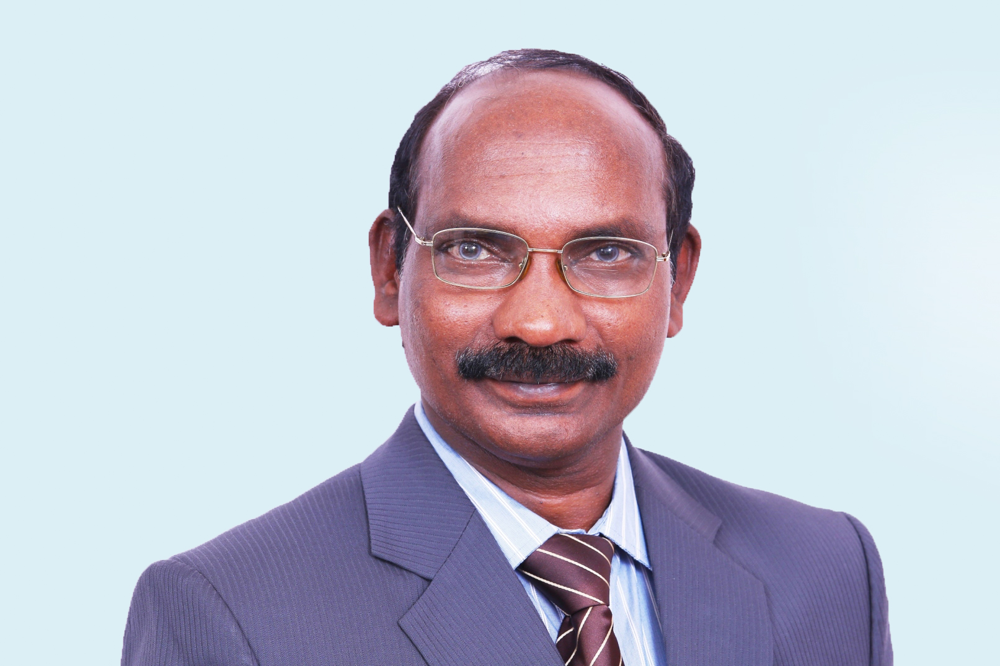
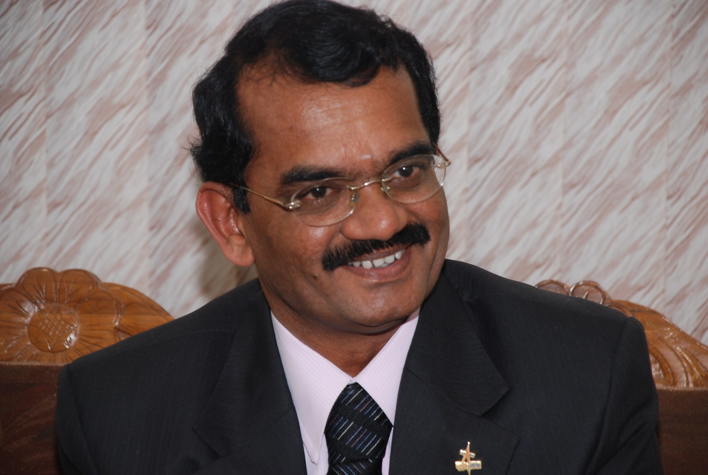
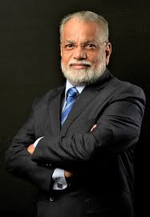

ISRO Hall of Fame
Elite
Contributors
The builders whose names deserve to be known alongside the missions they made possible.

1920 – 2002 · ISRO Chairman 1972–84
SATISH
DHAWAN
DHAWAN
The Institutionalist · Father of Experimental Fluid Dynamics in India
When SLV-3 failed in 1979, Dhawan stood before the press and took personal responsibility — shielding Kalam and his team. When it succeeded in 1980, he stepped aside and let Kalam face the cameras. This singular act of institutional leadership defines his chairmanship. He turned ISRO from a programme into a world-class institution with the management culture that makes it resilient to failure today.
Dhawan negotiated the technology transfer of the French Viking engine from SEP (Société Européenne de Propulsion). ISRO engineers adapted and indigenised it into the Vikas engine — which has never failed in an ISRO flight and powers the second stage of PSLV, GSLV, and LVM3. Every major Indian rocket flying today carries his institutional legacy in its propulsion system. The Satish Dhawan Space Centre (SHAR, Sriharikota) is named after him.
Dhawan negotiated the technology transfer of the French Viking engine from SEP (Société Européenne de Propulsion). ISRO engineers adapted and indigenised it into the Vikas engine — which has never failed in an ISRO flight and powers the second stage of PSLV, GSLV, and LVM3. Every major Indian rocket flying today carries his institutional legacy in its propulsion system. The Satish Dhawan Space Centre (SHAR, Sriharikota) is named after him.

1932 – 2017 · ISRO Chairman 1984–94
U.R.
RAO
RAO
Father of Indian Satellite Technology · Padma Bhushan
Udupi Ramachandra Rao built India's first satellite — Aryabhata — from scratch. When it launched on a Soviet Kosmos-3M rocket on April 19, 1975, India became a satellite nation. Rao designed the spacecraft's 26-sided polyhedron structure, its attitude control system, its solar panels, its GN2 gas expulsion thrusters — every system. He established ISRO's satellite manufacturing capability from zero and built what became the U R Rao Satellite Centre (URSC) in Bangalore — the facility that has built every ISRO spacecraft since.
As ISRO Chairman (1984–1994), Rao oversaw the development of the ASLV, the early PSLV, and the INSAT and IRS satellite families. He placed Indian meteorology, communications, and remote sensing on indigenous spacecraft. He brought India's space programme out of the Sarabhai-Dhawan founding era and into operational capability. Padma Bhushan in 1976.
As ISRO Chairman (1984–1994), Rao oversaw the development of the ASLV, the early PSLV, and the INSAT and IRS satellite families. He placed Indian meteorology, communications, and remote sensing on indigenous spacecraft. He brought India's space programme out of the Sarabhai-Dhawan founding era and into operational capability. Padma Bhushan in 1976.

b. 1957 · ISRO Chairman 2018–22
K.
SIVAN
SIVAN
Chandrayaan-2 Era · Rocket Man from the Farmlands
Kailasavadivoo Sivan was the first in his family to wear shoes to school. He grew up in a farming family in Sarakkalvilai, Kanyakumari district, Tamil Nadu. His PhD from IISc Bangalore in aeroelasticity became the foundation for his life's work: making rockets structurally survive the violence of atmospheric flight. He spent decades working on GSLV and the cryogenic engine challenge that defined Indian rocketry for a generation.
As ISRO Chairman, he led Chandrayaan-2 — and when the Vikram lander lost contact 2.1 km above the lunar surface on September 7, 2019, the moment of Prime Minister Modi embracing a visibly shaken Sivan was broadcast across the world. It was the most human moment in ISRO's public history. His team went on to build Chandrayaan-3, which succeeded on August 23, 2023. Sivan's leadership through failure to triumph was its own kind of achievement.
As ISRO Chairman, he led Chandrayaan-2 — and when the Vikram lander lost contact 2.1 km above the lunar surface on September 7, 2019, the moment of Prime Minister Modi embracing a visibly shaken Sivan was broadcast across the world. It was the most human moment in ISRO's public history. His team went on to build Chandrayaan-3, which succeeded on August 23, 2023. Sivan's leadership through failure to triumph was its own kind of achievement.

b. 1958 · Moon Man of India
M.
ANNADURAI
ANNADURAI
Project Director — Chandrayaan-1 & Mangalyaan · Padma Shri
Mylswamy Annadurai is called the Moon Man of India — and with reason. As Project Director of Chandrayaan-1, he delivered India's first lunar mission on a budget that stunned the world: ₹386 crore (approximately $80 million). The mission discovered water on the Moon. He then served as Project Director of Mangalyaan — India's Mars Orbiter Mission — bringing that mission in at ₹450 crore. India was the only country to succeed at Mars on its first attempt. Annadurai's philosophy was simple: use proven technology smartly, minimise failure modes, and trust your engineers.
He became Director of the ISRO Satellite Centre (now URSC) and built the institutional capacity that now produces India's increasingly sophisticated satellite platforms. His ability to extract maximum science from minimum budget defines the ISRO method. Padma Shri in 2011.
He became Director of the ISRO Satellite Centre (now URSC) and built the institutional capacity that now produces India's increasingly sophisticated satellite platforms. His ability to extract maximum science from minimum budget defines the ISRO method. Padma Shri in 2011.

Present · Human Spaceflight Lead
V.R.
LALITHAMBIKA
LALITHAMBIKA
Director — Human Space Flight Centre · Gaganyaan Architect
V.R. Lalithambika is one of the most senior women leaders in ISRO, and the person most responsible for defining the architecture of India's human spaceflight programme. As Director of the Human Space Flight Centre (HSFC), she led the conceptual design of the Gaganyaan crew module, the crew escape system, the environmental control and life support architecture, the training programme for India's astronaut corps, and the mission planning framework for what will be India's first crewed orbital flight.
She has a PhD from IISc Bangalore and has been with ISRO through the development of PSLV and GSLV. Her work on Gaganyaan is not just engineering — it is institutional architecture. She is building the systems, processes, and culture that will define Indian human spaceflight for decades. The four astronauts currently training owe their mission to her framework.
She has a PhD from IISc Bangalore and has been with ISRO through the development of PSLV and GSLV. Her work on Gaganyaan is not just engineering — it is institutional architecture. She is building the systems, processes, and culture that will define Indian human spaceflight for decades. The four astronauts currently training owe their mission to her framework.

b. 1963 · Missile Woman of India
TESSY
THOMAS
THOMAS
Project Director — Agni-IV & Agni-V · Padma Shri 2020
Tessy Thomas grew up in Alappuzha, Kerala — the same district as S. Somanath — and studied electrical engineering before pursuing a career in defence aerospace. She became the first woman in India to head a missile project — as Project Director of Agni-IV and then Agni-V, the intercontinental ballistic missile that placed India in an elite global club. Agni-V has a range of over 5,000 km and carries the credibility of India's strategic nuclear deterrent.
Called "Agniputri" (Daughter of Agni) by her colleagues, Thomas went on to become Director General of Aeronautical Systems at DRDO. She holds a PhD from the University of Pune and multiple patents in guidance systems. Her work bridges the space and defence ecosystems that Kalam originally built. Padma Shri in 2020. She is proof that the path Kalam traced — from a modest South Indian background to the frontier of India's strategic technology — was not singular. It is a path that can be walked.
Called "Agniputri" (Daughter of Agni) by her colleagues, Thomas went on to become Director General of Aeronautical Systems at DRDO. She holds a PhD from the University of Pune and multiple patents in guidance systems. Her work bridges the space and defence ecosystems that Kalam originally built. Padma Shri in 2020. She is proof that the path Kalam traced — from a modest South Indian background to the frontier of India's strategic technology — was not singular. It is a path that can be walked.

b. 1949 · ISRO Chairman 2009–14
K.
RADHAKRISHNAN
RADHAKRISHNAN
Mangalyaan Mission Approver · The Chairman Who Bet on Mars
K. Radhakrishnan was ISRO Chairman when the decision was made to send India to Mars. Mangalyaan was conceived, approved, funded, built, and launched in 15 months — a timeline that no other space agency on Earth had achieved for an interplanetary mission. When asked how India reached Mars for less than the Hollywood film Gravity cost to produce, Radhakrishnan was characteristically understated: we have the best engineers in the world, and we know how to use every rupee.
Under his chairmanship, ISRO also developed NavIC — India's indigenous satellite navigation system — and expanded the PSLV commercial launch programme into a significant revenue source through NewSpace India Limited. He laid the commercial and strategic groundwork that made Somanath's golden decade possible.
Under his chairmanship, ISRO also developed NavIC — India's indigenous satellite navigation system — and expanded the PSLV commercial launch programme into a significant revenue source through NewSpace India Limited. He laid the commercial and strategic groundwork that made Somanath's golden decade possible.

b. 1949 · India's First Cosmonaut
RAKESH
SHARMA
SHARMA
Wing Commander, IAF · Soyuz T-11 · April 3, 1984
On April 3, 1984, Wing Commander Rakesh Sharma became the first Indian in space — aboard Soviet Soyuz T-11, docking with the Salyut 7 space station. He spent 7 days, 21 hours, and 40 minutes in space. When Prime Minister Indira Gandhi asked from the ground how India looked from space, Sharma's answer entered history: "Saare Jahaan Se Achha" — Best in all the world.
India will send its own astronauts to its own space station. Rakesh Sharma was the first chapter. He proved it was possible. He returned to Earth, left the Air Force, and lived quietly — watching from a distance as the programme he inspired grew into something that would land on the Moon and dock spacecraft in orbit. He was there the night Chandrayaan-3 touched down. The second Indian in space is Shubhanshu Shukla, aboard ISS in 2025 — forty-one years after Sharma.
India will send its own astronauts to its own space station. Rakesh Sharma was the first chapter. He proved it was possible. He returned to Earth, left the Air Force, and lived quietly — watching from a distance as the programme he inspired grew into something that would land on the Moon and dock spacecraft in orbit. He was there the night Chandrayaan-3 touched down. The second Indian in space is Shubhanshu Shukla, aboard ISS in 2025 — forty-one years after Sharma.

1961 – 2003 · Eternal
KALPANA
CHAWLA
CHAWLA
NASA Astronaut · First Indian Woman in Space · STS-87 · STS-107
Kalpana Chawla was born in Karnal, Haryana. She studied aeronautical engineering in India, then earned her PhD from the University of Colorado Boulder. She joined NASA in 1994 and flew on STS-87 in 1997 — the first Indian woman in space. On February 1, 2003, Space Shuttle Columbia disintegrated on re-entry. Kalpana Chawla and six crewmates were lost sixteen minutes before landing.
ISRO renamed MetSat-1 as Kalpana-1 in her honour within weeks. A satellite named after her still watches over India's atmosphere, predicting monsoons, tracking cyclones, protecting coastlines. She didn't reach orbit as an ISRO astronaut — but her name orbits India from space every day. She is the reason Indian girls have been told since 2003 that space is for them too.
ISRO renamed MetSat-1 as Kalpana-1 in her honour within weeks. A satellite named after her still watches over India's atmosphere, predicting monsoons, tracking cyclones, protecting coastlines. She didn't reach orbit as an ISRO astronaut — but her name orbits India from space every day. She is the reason Indian girls have been told since 2003 that space is for them too.